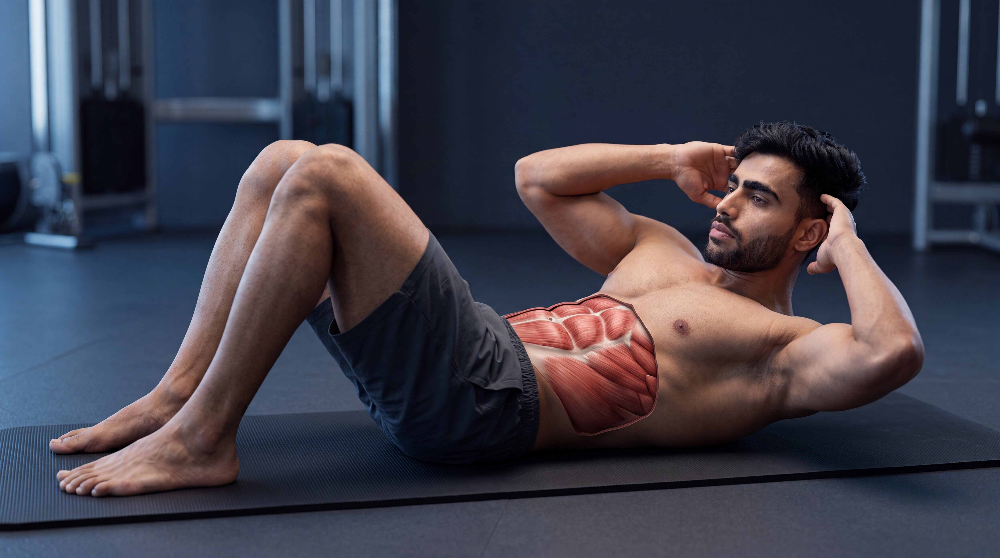

Beginner
Beginner
Crunch
Strengthen the abdominal muscles through controlled trunk flexion while maintaining focused tension throughout every repetition.
View ExerciseExplore step-by-step core exercise guides designed to help you master proper form, improve stability, understand muscle activation, avoid common mistakes, and build core strength with confidence.
Explore our core exercise library and learn proper technique, muscle activation, common mistakes, and practical coaching tips for every movement.
Beginner
Strengthen the abdominal muscles through controlled trunk flexion while maintaining focused tension throughout every repetition.
View Exercise Intermediate
Intermediate
Challenge the abdominal muscles and hip flexors through controlled leg elevation while maintaining stable upper-body positioning.
View Exercise Beginner
Beginner
Develop core stability and body control by maintaining a strong, aligned position against the force of gravity.
View Exercise Intermediate
Intermediate
Train the abdominal muscles with adjustable resistance through controlled spinal flexion and focused muscular tension.
View Exercise Advanced
Advanced
Challenge core stability and anti-extension strength by controlling the torso as the body extends forward and returns to the starting position.
View Exercise Intermediate
Intermediate
Challenge rotational control and the oblique muscles through deliberate side-to-side torso movement with stable positioning.
View Exercise Beginner
Beginner
Improve core control and coordination by moving opposite limbs while maintaining a stable torso and controlled spinal position.
View Exercise Beginner
Beginner
Combine dynamic core control with coordinated lower-body movement while maintaining a stable upper-body position.
View ExerciseDifferent core exercises develop different qualities. Choose your movement based on whether you want to build abdominal strength, improve stability and control, challenge advanced core strength, or develop dynamic and rotational performance.
Use controlled trunk-flexion exercises to directly challenge the abdominal muscles and develop stronger, more purposeful contractions through every repetition.
Challenge your core through demanding movements that require greater abdominal strength, full-body tension, and controlled resistance to unwanted movement.
Develop the ability to maintain a stable torso while resisting unwanted movement and coordinating the limbs through controlled exercise patterns.
Train the core through rotational and dynamic movement patterns that challenge coordination, torso control, oblique engagement, and full-body stability.
Go beyond the surface. Explore cinematic anatomy videos that reveal how your abdominal muscles, deep core, stabilizers, and movement mechanics work during every repetition.
Watch what happens beneath the skin as the abdominal muscles contract to flex the torso through every controlled phase of the crunch.
See how the rectus abdominis contributes as the rib cage moves toward the pelvis.
Understand how controlled trunk flexion creates abdominal tension without turning the movement into a full sit-up.
Connect anatomy with better crunch execution, controlled movement, and purposeful abdominal contraction.
Select an exercise to explore its cinematic under-the-skin breakdown.

HindiBuilding a stronger core is not only about performing more repetitions. Exercise selection, spinal control, proper breathing, and progressive challenge all shape long-term core strength and stability.
Master control first. Then make every repetition more stable, deliberate, and purposeful.
A complete core program should include trunk flexion, anti-extension, stability, and rotational movements. Combining different patterns develops more complete and practical core strength.
Maintain deliberate control of your spine and pelvis throughout each exercise. Avoid excessive arching, uncontrolled momentum, or compensations that reduce effective core engagement.
Progress can come from longer holds, more controlled repetitions, increased resistance, greater range of motion, or harder exercise variations while maintaining stable and deliberate technique.
Your core does more than flex the torso. It helps stabilize the spine, control movement, transfer force between the upper and lower body, and resist unwanted motion during training.
Get clear, practical answers to common questions about core exercises, training frequency, technique, exercise selection, stability, and balanced core development.
For many people, around two to four purposeful core exercises in one workout can be enough, depending on training experience, weekly frequency, exercise difficulty, and total training volume. Choose movements that develop different core functions rather than simply adding more exercises.
Many people can train their core two to four times per week depending on exercise intensity, training volume, experience, recovery, and goals. Like other muscles, the core benefits from progressive training and sufficient recovery between demanding sessions.
Crunches can effectively train trunk flexion and challenge the rectus abdominis, but a complete core program should include different movement patterns. Exercises such as planks, dead bugs, hanging leg raises, rollouts, and rotational movements can develop additional aspects of core strength, stability, and control.
Some core exercises involve the muscles around the spine, but excessive lower-back discomfort may be influenced by exercise difficulty, technique, fatigue, range of motion, or loss of abdominal control. Reduce the difficulty when necessary, maintain deliberate positioning, and avoid forcing movements that cause pain.
Both can be useful because they train the core differently. Crunches involve controlled trunk flexion, while planks challenge the ability to maintain a stable position against gravity. Beginners can use both when they can perform them comfortably with controlled technique.
Core exercises can strengthen and develop the abdominal muscles, but visible abdominal definition also depends on factors such as overall body composition, nutrition, genetics, and individual fat distribution. Core training alone does not guarantee visible abs.
Training needs vary between individuals. Choose core exercises, training volume, exercise difficulty, and movement ranges that match your experience, goals, recovery, and comfort.
Strength is built through balanced training. Explore more training categories, discover new exercises, and keep building your knowledge one movement at a time.